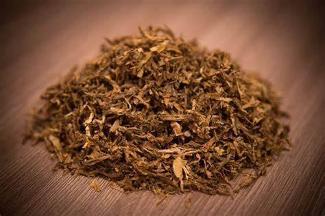

Home
News
Adout Us

Parlament Carat
Марка:MoVo
Назва:Табак
Виробництво:Парагвай
Термін придатності: 2 роки
Ціна: 70₴(100г.)
+
-
Купити
Інструкція:
Підготуй усе необхідне: тютюн, папір для самокруток, фільтр (можна зробити з картону або використати готовий).
Поклади фільтр: Розмісти фільтр на одному кінці паперу.
Розклади тютюн: Візьми невелику кількість тютюну і рівномірно розподіли його по паперу вздовж фільтра.
Сформуй циліндр: Обережно почни скручувати папір з тютюном у циліндричну форму, стискаючи тютюн всередині.
Заклей самокрутку: Змочи клеєну смужку на папері і заверни її, закріпивши самокрутку.
Вирівняй краї: За бажанням можна підрівняти кінці самокрутки або трошки ущільнити тютюн.
Send